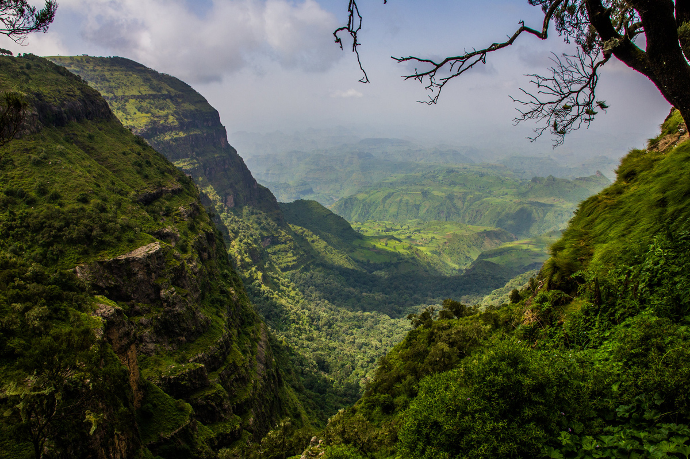
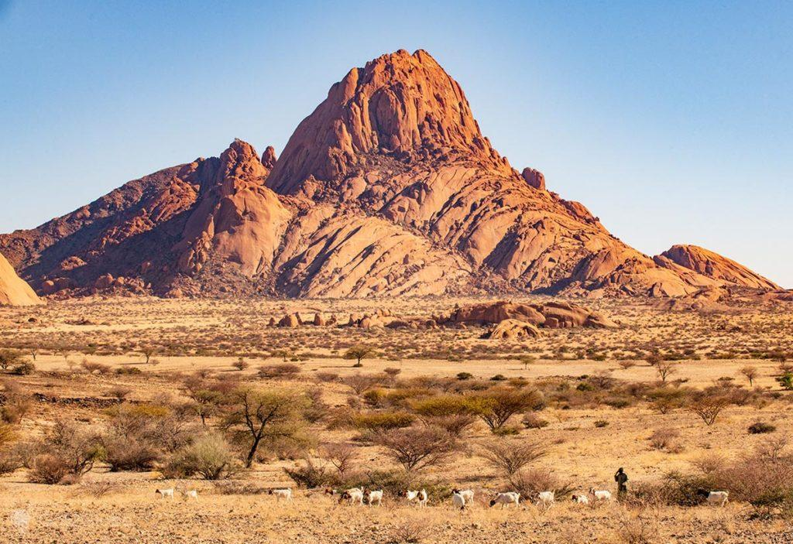
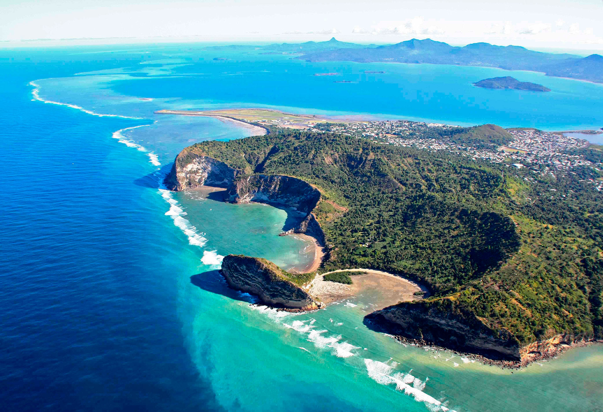

Exploring the vast and diverse continent of Africa is a dream for many travelers looking to uncover its natural beauty, rich history, and vibrant cultures. While popular destinations like the Serengeti, Victoria Falls, and the pyramids of Egypt often steal the spotlight, Africa is also home to numerous hidden gems waiting to be discovered.
In this blog post, we will take you on a journey to explore 14 hidden gems of Africa that are sure to captivate and inspire you.
1. Lalibela, Ethiopia

Lalibela is a small town located in the northern part of Ethiopia, known for its magnificent rock-hewn churches that are a UNESCO World Heritage Site. The town is named after King Lalibela, who ruled Ethiopia in the 12th century and is credited with the construction of the churches.
The rock-hewn churches of Lalibela are an architectural marvel, carved entirely out of solid rock. There are 11 churches in total, each one unique in its design and layout. The churches are connected by a series of tunnels and passageways, creating a complex network of underground pathways.
One of the most famous churches in Lalibela is Bet Giyorgis, or the Church of St. George, which is carved in the shape of a cross and is considered the most visually stunning of all the churches. Another notable church is Bet Medhane Alem, which is the largest monolithic church in the world.
The churches of Lalibela are not only remarkable for their architectural significance but also for their religious importance. They are still functioning churches today and are a place of pilgrimage for Ethiopian Christians. Each church has its own unique religious significance and attracts visitors from all over the world.
In addition to the churches, Lalibela is also known for its stunning natural beauty. The town is surrounded by rugged mountains and lush valleys, making it a popular destination for trekkers and nature lovers. The people of Lalibela are known for their warm hospitality and rich cultural heritage, adding to the overall charm of the town.
Overall, Lalibela is a fascinating destination that offers a unique blend of history, culture, and natural beauty. Whether you are interested in exploring ancient architecture, embarking on a spiritual journey, or simply soaking in the stunning landscapes, Lalibela has something to offer for every traveler. A visit to Lalibela is sure to be a memorable and enriching experience that will stay with you long after you have left this remarkable town.
2. Fish river canyon, Namibia

Fish River Canyon is one of the most stunning natural landmarks in Namibia, located in the southern part of the country near the town of Keetmanshoop. It is the largest canyon in Africa and the second largest in the world, after the Grand Canyon in the United States. The canyon stretches for approximately 160 kilometers (100 miles), reaching depths of up to 550 meters (1,800 feet) and widths of up to 27 kilometers (17 miles) in some places.
Formed over millions of years by the Fish River carving its way through the Namibian plateau, the canyon offers breathtaking panoramic views of rugged cliffs, deep ravines, and winding riverbeds. The landscape is characterized by a stark contrast between the deep blue skies above and the rusty red cliffs below, creating a dramatic and awe-inspiring sight that leaves visitors in awe of its sheer scale and beauty.
The Fish River Canyon is not only a natural wonder but also a popular hiking destination, attracting adventure enthusiasts from around the world. The most famous trek in the canyon is the Fish River Canyon Hiking Trail, a challenging 85-kilometer (53-mile) multi-day hike that takes hikers through rugged terrain, steep descents, and rocky riverbeds. The trail offers hikers the opportunity to experience the canyon up close, witness its geological features, and immerse themselves in the wilderness of the surrounding area.
Apart from hiking, visitors to the Fish River Canyon can also enjoy other activities such as birdwatching, photography, and stargazing. The canyon is home to a variety of wildlife, including mountain zebra, kudu, baboons, and a diverse range of bird species, making it a paradise for nature lovers and wildlife enthusiasts.
In addition to its natural beauty and recreational opportunities, the Fish River Canyon holds cultural significance for the indigenous people of Namibia. The canyon is believed to be a sacred place and is steeped in local myths and legends, adding an extra layer of mystique to its already enchanting allure.
Overall, the Fish River Canyon is a must-visit destination for anyone traveling to Namibia, offering a unique blend of natural beauty, adventure, and cultural significance that makes it one of the most iconic landmarks in Africa. Whether you're an avid hiker, a nature lover, or simply a traveler in search of awe-inspiring landscapes, the Fish River Canyon is sure to leave a lasting impression and create unforgettable memories that will stay with you long after you've left its majestic cliffs and tranquil riverbanks behind.
3. Blyde river canyon, South Africa

The Blyde River Canyon, located in Mpumalanga, South Africa, is one of the most spectacular natural wonders in the country. Stretching over 25 kilometers in length and reaching depths of up to 800 meters, this impressive canyon is the third largest canyon in the world and offers breathtaking views of towering cliffs, lush vegetation, and the meandering Blyde River below.
Formed over millions of years through the erosive power of water, the canyon is a testament to the geological forces that have shaped the landscape of the region. The towering cliffs of red sandstone and quartzite create a dramatic backdrop for the lush greenery of the surrounding forests, making it a paradise for nature lovers, photographers, and hikers alike.
One of the most iconic features of the Blyde River Canyon is the Three Rondavels, a series of three round rock formations that resemble traditional African huts. These towering geological formations stand proudly overlooking the canyon, providing a striking contrast against the deep blue skies and the verdant landscape below.
Visitors to the Blyde River Canyon can explore the area through a variety of activities, such as hiking, scenic drives, boat cruises, and even hot air balloon rides. The canyon is home to a diverse array of plant and animal species, including rare birds, antelope, and even the occasional leopard.
In addition to its natural beauty, the Blyde River Canyon is also steeped in history and culture. The surrounding area is rich in archaeological sites, with evidence of early human habitation dating back thousands of years. The canyon has also been an important trade route for local communities for centuries, and remnants of this history can still be seen in the form of old settlements and trading routes.
Overall, the Blyde River Canyon is a must-visit destination for anyone traveling to South Africa. Its awe-inspiring natural beauty, rich biodiversity, and cultural significance make it a truly unique and unforgettable experience for visitors of all ages. Whether you are an outdoor enthusiast, a history buff, or simply someone looking to escape into nature, the Blyde River Canyon has something to offer everyone.
4. Lake Malawi, Malawi

Lake Malawi, also known as Lake Nyasa, is an iconic and mesmerizing body of water located in the Eastern African country of Malawi. This freshwater lake is one of the largest lakes in Africa and the ninth largest lake in the world by surface area. Its vast expanse covers approximately 29,600 square kilometers and stretches over 560 kilometers in length.
What sets Lake Malawi apart is not only its sheer size but also its incredible biodiversity. The lake is home to an extraordinary array of fish species, with estimates ranging from 500 to over 1,000 different types found in its waters. This makes Lake Malawi a popular destination for freshwater fish enthusiasts and researchers alike.
The crystal-clear waters of Lake Malawi are a sight to behold, offering stunning views and opportunities for various water-based activities such as swimming, snorkeling, and scuba diving. The lake's shoreline is dotted with sandy beaches, rocky coves, and lush greenery, providing a picturesque backdrop for visitors to enjoy.
The communities living around Lake Malawi have a deep connection to the lake, relying on its waters for fishing, transportation, and irrigation. Fishing is a significant source of livelihood for many locals, who use traditional methods such as wooden dhows and handmade nets to catch fish in the lake.
Lake Malawi is not just a natural wonder; it also holds cultural and historical significance. The lake has been a hub of trade and communication for centuries, connecting different ethnic groups and facilitating the exchange of goods and ideas. The surrounding area is rich in cultural heritage, with traditional dances, music, and art reflecting the diverse traditions of the people who call this region home.
Despite its beauty and ecological importance, Lake Malawi faces challenges such as overfishing, pollution, and habitat destruction. Conservation efforts are underway to protect the lake's delicate ecosystem and ensure its sustainability for future generations.
In conclusion, Lake Malawi is a jewel of Eastern Africa, a place of unparalleled beauty, biodiversity, and cultural significance. Whether you are a nature lover, an adventurer, or a cultural enthusiast, a visit to Lake Malawi promises an unforgettable experience that will leave you in awe of the wonders of this remarkable body of water.
5. Mount Nyiragongo, D.R.Congo

Mount Nyiragongo is an active stratovolcano located in the Virunga Mountains in the Democratic Republic of the Congo, near the city of Goma. It is one of the most iconic and dangerous volcanoes in the world, known for its persistent lava lake and frequent eruptions.
The volcano's main feature is its massive summit caldera, which is about 1.2 kilometers wide and contains a lava lake that is one of the largest in the world. The lava lake has a constant churning motion, creating mesmerizing patterns and colors that are a sight to behold.
Nyiragongo is one of the most active volcanoes in Africa and has a history of violent eruptions. In 1977, a major eruption caused the lava lake to drain rapidly, resulting in a devastating flow of lava that reached the outskirts of Goma, destroying homes and infrastructure in its path. Another eruption in 2002 also caused widespread destruction in Goma, displacing thousands of people and resulting in loss of life.
Despite its dangers, Mount Nyiragongo is a popular destination for adventure travelers and volcanologists who are drawn to its unique geological features and the opportunity to witness an active lava lake up close. Hiking to the summit of Nyiragongo is a challenging but rewarding experience, offering stunning views of the surrounding landscape and the bubbling lava lake below.
Visitors to Mount Nyiragongo should be aware of the risks associated with visiting an active volcano and take necessary precautions to ensure their safety. The volcano is constantly monitored by scientists to track its activity and provide early warning of any potential eruptions.
In conclusion, Mount Nyiragongo is a fascinating and majestic natural wonder that commands respect and awe. Its fiery beauty and raw power serve as a reminder of the Earth's geological forces at work and the delicate balance between human civilization and nature. It stands as a testament to the enduring allure of volcanoes and the mysteries they hold.
6. The simien mountains, Ethiopia
The Simien Mountains National Park is a UNESCO World Heritage Site located in northern Ethiopia. The park is known for its stunning landscapes, unique wildlife, and rich cultural heritage. It covers an area of approximately 412 square kilometers and is home to a diverse range of habitats, including vast grasslands, towering cliffs, deep valleys, and rugged peaks.
One of the most iconic features of the Simien Mountains is its dramatic escarpments, which rise to over 1,500 meters in some places. These rugged cliffs are the result of millions of years of geological processes, including volcanic activity and erosion. The Simien Mountains are part of the Ethiopian Highlands, a region renowned for its exceptional natural beauty and biodiversity.
The park is home to a wide variety of wildlife, including several endemic species such as the walia ibex, the Ethiopian wolf, and the gelada baboon. The gelada baboons, in particular, are a common sight in the park and are known for their distinctive red chest patches and impressive social behaviors. Birdwatchers will also be delighted by the park's avian diversity, with over 180 species recorded in the area.
In addition to its natural wonders, the Simien Mountains also have a rich cultural heritage. The region has been inhabited for thousands of years, and there are numerous ancient rock churches, fortresses, and other archaeological sites to explore. The local communities have a strong connection to the land and have preserved many traditional practices and customs.
Visitors to the Simien Mountains National Park can enjoy a range of activities, including trekking, wildlife watching, birding, and cultural tours. The park has a network of well-maintained hiking trails that cater to all levels of fitness and experience, making it a popular destination for adventure seekers and nature lovers alike.
Overall, the Simien Mountains National Park is a true gem of Ethiopia, offering a unique blend of natural beauty, wildlife, and cultural heritage. Whether you are looking to immerse yourself in the great outdoors, spot rare wildlife, or learn about the region's fascinating history, the Simien Mountains has something for everyone. It is a place where you can truly connect with nature and experience the wonders of the Ethiopian highlands in all their glory.
7. Spitzkoppe, Namibia
Spitzkoppe, also known as the "Matterhorn of Namibia," is a majestic group of bald granite peaks located in the Namib Desert of Namibia. Its distinct silhouette rises dramatically from the surrounding flat plains, making it a stunning and iconic landmark in the region. Spitzkoppe is a popular destination for travelers seeking adventure, nature enthusiasts, photographers, and rock climbers.
The name Spitzkoppe translates to "Sharp Head" in German, a fitting description of the sharp peaks and rocky outcrops that make up this unique mountain range. The highest peak, known as the Gross Spitzkoppe, towers at around 1,784 meters above sea level, providing breathtaking panoramic views of the surrounding desert landscape.
Spitzkoppe is not only visually striking but also holds great cultural and historical significance. The area has been inhabited for thousands of years, with evidence of ancient rock art dating back to prehistoric times. These ancient paintings depict the wildlife, rituals, and daily life of the San people, who were the original inhabitants of the area.
Visitors to Spitzkoppe can explore the rugged terrain on foot, discovering hidden caves, natural arches, and rock formations that have been sculpted by centuries of erosion. The dramatic sunsets and star-filled night skies make Spitzkoppe a magical place to witness the beauty of nature at its most raw and untouched.
For adventure seekers, Spitzkoppe offers excellent rock climbing opportunities, with routes suitable for both beginners and experienced climbers. The unique granite formations provide a challenging yet rewarding climbing experience, with routes ranging from easy scrambles to more technical climbs for experienced enthusiasts.
Camping is a popular way to experience Spitzkoppe, allowing visitors to immerse themselves in the stunning surroundings and sleep under the vast African sky. Basic camp facilities are available, offering a rustic but unforgettable stay in the heart of the desert.
In conclusion, Spitzkoppe is a true gem of Namibia, a place of unparalleled natural beauty, rich history, and endless opportunities for exploration and adventure. Whether you are a nature lover, a history buff, an avid photographer, or a thrill-seeking climber, Spitzkoppe has something to offer everyone who is willing to venture off the beaten path and discover the magic of this ancient and awe-inspiring landscape.
8. Socotra, Yemen
Socotra, an island in Yemen known for its unique biodiversity and stunning natural beauty, has captured the imaginations of travelers and scientists alike. Situated in the Indian Ocean near the Arabian Peninsula, Socotra is often referred to as the "Galapagos of the Indian Ocean" due to its rich and distinctive flora and fauna that are found nowhere else on Earth. The island is a UNESCO World Heritage Site, recognized for its exceptional and endemic biodiversity.
One of the most striking features of Socotra is its otherworldly landscape, characterized by bizarrely shaped limestone plateaus, deep canyons, and surreal rock formations. The iconic Dragon's Blood trees, with their umbrella-shaped crowns and blood-red sap, are emblematic of Socotra's unique natural heritage. These ancient trees, along with a diverse array of succulent plants, rare birds, and marine life, contribute to the island's reputation as a living laboratory of evolution.
Socotra's isolation and harsh environmental conditions have led to the evolution of numerous endemic species that have adapted to the island's unique ecosystem. The island is home to more than 700 plant species, of which one-third are endemic to Socotra. The avifauna of Socotra is also remarkable, with endemic bird species such as the Socotra warbler and the Socotra starling attracting birdwatchers from around the world.
In addition to its natural wonders, Socotra has a rich cultural heritage shaped by centuries of seafaring history and diverse influences from Africa, the Middle East, and South Asia. The island's inhabitants, known as the Socotri people, have their own distinct language, customs, and traditional way of life that are deeply interconnected with the island's ecology.
Despite its ecological and cultural significance, Socotra faces growing threats from climate change, unsustainable development, and political instability in Yemen. Conservation efforts are underway to protect the island's unique biodiversity and promote sustainable tourism that benefits local communities while preserving Socotra's natural heritage for future generations.
In conclusion, Socotra stands as a testament to the wonders of the natural world and the intricate interplay between humans and their environment. This remote island in Yemen holds a treasure trove of biodiversity and cultural heritage that continues to inspire awe and wonder in all who visit its shores. It is a place of beauty, resilience, and untold stories waiting to be discovered and shared with the world.
9. Tassili n'ajjer, Algeria

Tassili n'Ajjer is a vast plateau region in southeastern Algeria, known for its breathtaking landscapes, ancient rock art, and unique geological formations. This UNESCO World Heritage Site is a place of great cultural and historical significance, offering a glimpse into the lives of ancient civilizations that once inhabited the area.
The name "Tassili n'Ajjer" means "plateau of rivers" in the Tuareg language, a reference to the numerous wadis and dry riverbeds that crisscross the region. The plateau sits at an average altitude of about 1,200 meters above sea level and covers an area of over 72,000 square kilometers, making it one of the largest and most important rock art sites in the world.
Tassili n'Ajjer is renowned for its extensive collection of rock art, which dates back thousands of years and provides valuable insights into the prehistoric cultures that inhabited the area. The rock art of Tassili n'Ajjer features a wide variety of subjects, including human figures, animals, geometric designs, and scenes of everyday life, all meticulously painted or etched onto the sandstone cliffs and rock shelters.
One of the most famous rock art sites in Tassili n'Ajjer is the "Cave of Swimmers," named after the depictions of human figures swimming in what appears to be a lake or river. These ancient rock paintings, believed to date back to the Neolithic period, have captured the imagination of archaeologists, historians, and art enthusiasts alike, offering a glimpse into a lost world where humans and nature existed in harmony.
In addition to its rich cultural heritage, Tassili n'Ajjer is also home to stunning natural wonders, including towering sandstone formations, deep canyons, and vast expanses of desert. The landscape of Tassili n'Ajjer is a testament to the power of erosion and geological forces, with dramatic cliffs, arches, and rock spires sculpted by millions of years of wind and water.
Visiting Tassili n'Ajjer is a truly unforgettable experience, offering travelers the opportunity to immerse themselves in a landscape of unparalleled beauty and historical significance. Whether exploring the ancient rock art sites, trekking through the desert, or simply marveling at the breathtaking vistas, Tassili n'Ajjer is a destination that never fails to inspire awe and wonder.
In conclusion, Tassili n'Ajjer is a place of extraordinary beauty, cultural significance, and geological wonder. From its ancient rock art to its stunning landscapes, this remote plateau region in Algeria offers a window into the past and a glimpse of the world's natural splendor. A visit to Tassili n'Ajjer is a journey back in time, a chance to connect with the ancient peoples who once called this place home, and a reminder of the enduring power of nature to enchant and inspire us.
10. Comoros archipelago, Comoros
The Comoros archipelago is a group of islands located in the Indian Ocean, off the southeastern coast of Africa. It consists of four main islands: Grande Comore, Mohéli, Anjouan, and Mayotte. The archipelago is known for its stunning natural beauty, rich cultural heritage, and unique history.
The Comoros Islands have a total population of around 850,000 people, and the majority of the population is of mixed African, Arab, and Malagasy descent. The official languages are Comorian, French, and Arabic, reflecting the diverse cultural influences that have shaped the islands over the centuries.
One of the most striking features of the Comoros archipelago is its volcanic landscape. The islands are home to several active volcanoes, including Mount Karthala on Grande Comore, which is one of the most active volcanoes in the world. The volcanic soil has made the islands incredibly fertile, allowing for lush vegetation and diverse flora and fauna.
The Comoros Islands have a rich history dating back to the 10th century when Arab traders first arrived on the islands. Over the centuries, the islands were ruled by various sultanates and empires, including the Shirazi dynasty and the French colonial administration. In 1975, the islands gained independence from France and formed the Union of the Comoros.
Today, the Comoros archipelago is known for its vibrant cultural traditions, including music, dance, and folklore. The islands are also famous for their colorful markets, where locals sell a variety of goods, including spices, fruits, and handmade crafts. The traditional cuisine of the Comoros features a mix of African, Arab, and French influences, with dishes like coconut curry, grilled fish, and cassava being popular staples.
In recent years, the Comoros Islands have become a popular tourist destination, attracting visitors with their beautiful beaches, coral reefs, and tropical forests. Tourists can enjoy a range of activities, including snorkeling, diving, hiking, and whale watching. The islands also offer a unique opportunity to experience authentic island life and immerse oneself in the local culture.
Overall, the Comoros archipelago is a fascinating destination with a rich history, stunning natural beauty, and warm hospitality. Whether you are interested in exploring volcanic landscapes, relaxing on pristine beaches, or learning about diverse cultures, the Comoros Islands have something to offer for every traveler.
11. Kidepo Valley National Park, Uganda

Kidepo Valley National Park is a true hidden gem nestled in northeastern Uganda, offering a unique and captivating safari experience for nature lovers and adventure seekers alike. Established in 1962, this park covers an expansive area of rugged savannah landscapes, rolling hills, and breathtaking valleys bounded by mountains in the distance, creating a picturesque setting for wildlife enthusiasts. The park is named after the Kidepo River that flows through its heart, sustaining the diverse flora and fauna that call this place home.
One of the defining features of Kidepo Valley National Park is its remarkable biodiversity, with over 77 mammal species and almost 500 bird species documented within its borders. Visitors to the park can embark on game drives to spot iconic African wildlife such as lions, elephants, giraffes, zebras, buffalo, and more in their natural habitat. Kidepo Valley National Park is especially renowned for its large herds of buffaloes and elephants, as well as its healthy predator populations including lions, leopards, and cheetahs.
Beyond the game drives, Kidepo Valley National Park offers a plethora of activities to immerse visitors in the beauty and wilderness of the African savannah. Guided nature walks provide a closer look at the park's flora and fauna, while cultural visits to nearby communities offer insights into the rich cultural heritage of the local Karamojong people. For the more adventurous souls, hiking the Lamoj Mountains or Narus Valley provides panoramic views of the park and its diverse landscapes.
The park's remote location and limited accessibility have helped preserve its pristine wilderness, making it a haven for wildlife and a paradise for those seeking an off-the-beaten-path safari experience. Camping under the starlit African sky amidst the sounds of the wilderness is a truly unforgettable experience that awaits visitors to Kidepo Valley National Park.
In conclusion, Kidepo Valley National Park stands as a testament to the raw beauty and richness of Uganda's natural landscape, offering a safari experience unlike any other in East Africa. For those who seek adventure, wildlife encounters, and cultural immersion in a remote and unspoiled wilderness setting, Kidepo Valley National Park is a must-visit destination that promises an unforgettable journey into the heart of Africa.
12. Ponta do Ouro, Mozambique

Ponta do Ouro, located in the southernmost part of Mozambique, is a hidden gem known for its pristine beaches, crystal-clear waters, and vibrant marine life. This coastal town is a popular destination for tourists seeking a tropical paradise with a laid-back atmosphere and fantastic opportunities for diving and snorkeling.
One of the main attractions of Ponta do Ouro is its world-class diving sites, offering some of the best underwater experiences in Africa. The warm waters of the Indian Ocean are home to diverse marine species, including colorful coral reefs, turtles, dolphins, and a variety of tropical fish. Divers can explore underwater caves, swim with whale sharks and manta rays, and discover the fascinating shipwrecks that lie beneath the surface.
In addition to diving, Ponta do Ouro offers a range of other water-based activities such as snorkeling, fishing, and kayaking. Visitors can also relax on the soft sandy beaches, go dolphin watching, or take a sunset cruise along the coast. The town itself has a laid-back and friendly vibe, with a selection of bars, restaurants, and shops where visitors can sample local cuisine and buy souvenirs.
Ponta do Ouro is also a great place to learn about the local culture and traditions of Mozambique. Visitors can interact with the friendly locals, visit traditional markets, and perhaps even participate in a traditional dance or music performance. The town's proximity to the South African border also makes it a convenient stop for travelers exploring the region.
Overall, Ponta do Ouro is a hidden paradise waiting to be discovered by those seeking a tropical escape off the beaten path. Whether you are an adventure enthusiast, a nature lover, or simply looking to relax and unwind on the beach, Ponta do Ouro has something to offer everyone.
13. Mountain Mulanje, Malawi

Mount Mulanje is a stunning massif located in southern Malawi, rising sharply from the surrounding plains and dominating the landscape with its towering peaks and rugged cliffs. Known as the "Island in the Sky," Mount Mulanje is a popular destination for hikers, climbers, and nature enthusiasts seeking adventure and breathtaking views.
The massif covers an area of approximately 650 square kilometers and is home to an incredible diversity of flora and fauna, including unique species of plants and animals that are found nowhere else in the world. The mountain's high rainfall and temperate climate support lush montane forests, crystal-clear streams, and cascading waterfalls, creating a truly magical and enchanting environment.
For adventurers, Mount Mulanje offers a variety of challenging hiking and climbing routes catering to all skill levels. The mountain is dotted with numerous peaks, including Sapitwa Peak, the highest point in Malawi at 3,002 meters above sea level. Climbing to the summit of Sapitwa Peak is a rewarding experience, offering panoramic views of the surrounding countryside and a sense of accomplishment for those who reach the top.
In addition to its natural beauty and recreational opportunities, Mount Mulanje holds cultural significance for the local people, who consider the mountain sacred and imbue it with spiritual meaning. The mountain is steeped in folklore and legend, with stories of ancestral spirits and supernatural beings that inhabit its rocky outcrops and hidden valleys.
Visitors to Mount Mulanje can explore traditional villages nestled in the foothills, where they can experience the warm hospitality of the local people and learn about their way of life. Cultural tours and homestays offer a unique opportunity to immerse oneself in the rich heritage and traditions of the Malawian highlands.
Overall, Mount Mulanje is a place of unparalleled beauty and adventure, where nature, culture, and spirituality converge to create a truly unforgettable experience. Whether you are seeking a challenging climb, a peaceful hike, or a cultural exchange, Mount Mulanje has something to offer for everyone. Plan your visit to this majestic mountain and prepare to be awed by its natural wonders and enchanted by its timeless charm.
14. Tswalu Kalahari, South Africa
Tswalu Kalahari is a spectacular private game reserve located in the Northern Cape Province of South Africa. Covering over 100,000 hectares of pristine wilderness, Tswalu is the largest private game reserve in South Africa and offers a truly exclusive and luxurious safari experience.
The reserve is situated in the southern Kalahari Desert, a region known for its unique landscapes, rich biodiversity, and fascinating cultural history. Tswalu is home to a wide variety of wildlife species, including the iconic Kalahari lion, the endangered African wild dog, cheetah, black rhino, and numerous antelope species. Bird enthusiasts will also be delighted by the diverse birdlife found in the reserve, with over 240 bird species recorded in the area.
One of the standout features of Tswalu Kalahari is its commitment to conservation and sustainability. The reserve is dedicated to preserving the unique ecosystem of the Kalahari and operates several conservation programs aimed at protecting the wildlife and habitat of the area. Guests at Tswalu have the opportunity to learn more about these initiatives through guided tours and experiences with the reserve's expert guides and researchers.
Accommodation at Tswalu Kalahari is nothing short of extraordinary, with two luxurious lodges offering a blend of comfort, elegance, and authentic African charm. The lodges are tastefully designed to blend in with the natural surroundings and provide a peaceful and secluded retreat for guests to unwind after a day of safari adventures.
Activities at Tswalu include game drives, guided bush walks, horseback riding safaris, and visits to ancient archaeological sites in the area. Guests can also enjoy wellness treatments at the spa, stargazing under the clear Kalahari skies, and indulging in exquisite meals prepared with locally sourced ingredients.
Overall, Tswalu Kalahari is a place of unparalleled beauty and wilderness, where guests can immerse themselves in the magic of the African bush and experience the wonders of the Kalahari Desert in utmost luxury and comfort. A visit to Tswalu is sure to leave a lasting impression and create unforgettable memories of an African safari like no other.
As you can see, Africa is a continent full of hidden gems just waiting to be explored. From ancient ruins and towering mountains to pristine beaches and exotic wildlife, there is something for every type of traveler looking to immerse themselves in the beauty and diversity of this incredible continent. So why not step off the beaten path and uncover these 14 hidden gems of Africa on your next adventure?